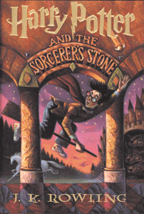
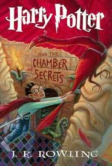
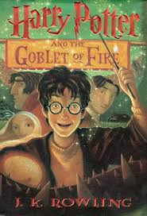
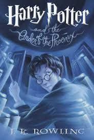
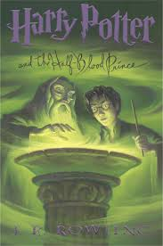
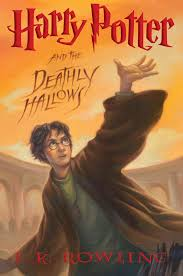

Harry Potter and the Sorcerer's Stone
It is the book that started it all. The first story shows Harry struggling to adapt to his new found identity. An even greater challenge is Harry's struggle to ward off Lord Voldemort. Luckily he has the help of his two best friends Ron and Hermione. While it is a must read, this book is by far the most simplistic . Also, there is some unnecessary information like Wizarding currency that can make it a boring reread. However, Pay attention because many random things from this book will appear in later entries.

Harry Potter and the Chamber of Secrets
Harry is back for a second year, and this is probably my third favorite book in the series. The book plays out as a Whodunit mystery. There are new characters such as Gilderoy Lockhart who help keep the story fresh. Lastly, we gain insight on the kid who will become He Who Must Not Be Named.
Harry Potter and the Prisoner of Azkaban
While not my favorite book, this one is a favorite for many of fans. The reason is that the book deals heavily with the back story of Harry's Father James and James' friends. A great addition in this book is Harry and his friends being old enough to travel to Hogsmeade, a wizarding town near Hogwarts. Also, Remus Lupin is the new Defense Against the Dark Arts teacher, and is one of the best characters in the book.

Harry Potter and the Goblet of Fire
The fourth book is a big turning point for the series. The book is significantly longer than the past ones, and is much darker. The story revolves around two other wizarding schools coming to Hogwarts for the year. Each school sends a representative to compete in deadly tasks in order to win the Goblet of Fire. However the task of finding a date to the Yule Ball might be the thing that kills Harry and Ron. Adding to the darker side of the story, there is a death of a significant character at the end.

Harry Potter and the Order of the Phoenix
The fifth book is my least favorite by far. It is the longest, and the hardest to get through. Harry is depressed and mopey throughout the novel. After witnessing Voldemort kill a friend and come back to life in the previous year, it does make sense that Harry is depressed. The problem is that the government is telling the public that Harry is lying about Voldemort. To make matters worse, Dolores Umbridge is a new teacher and she is by far the worst character in the entire series. She is almost more evil than Voldemort.
Harry Potter and the Half-Blood Prince
While the fifth is my least favorite, the sixth is my favorite. My first reason is that I love how the kook deals heavily with Voldemort's backstory. It is enticing and helps set the stage for the final book. The other aspect is the subplots pertaining to the social lives of the characters. Harry, Ron and Hermione feel like real teenagers going through real teenagers issues. This leads to many funny and powerful scenes.

Harry Potter and the Deathly Hallows
How can the seventh book be my second favorite book and not my first? Well, the seventh book is completely different than any other book. The trio do not attend Hogwarts, but instead are on an epic quest to defeat Voldemort. There are some thrilling and emotional scenes. The whole series cumulates into an epic battle at Hogwarts. JK Rowling finishes the series on a perfect note.
